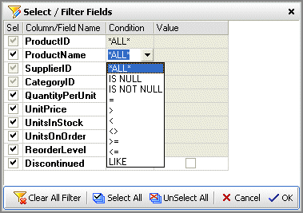
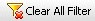

Filtering Data
Data displayed by DbSee can be filtered in two different ways:
When you open a Table with large number of records, it is essential that you filter the data when it is read from the Database. Reading and loading a lot of data without filtering would slow down the system, sometimes so much that it appears to have locked up.
To filter the data when it is read, select the Table you want to open in the Tables Tree grid and instead of checking the Checkbox to open it, Click on the button on the Tables Grid Toolbar.
 Alternatively you can also set the Option Show Filter Dialog before Opening a Table or View in DbSee Options which will automatically display the Filter Dialog whenever you open any Table (or View) by checking its checkbox on the Tables Grid.
Alternatively you can also set the Option Show Filter Dialog before Opening a Table or View in DbSee Options which will automatically display the Filter Dialog whenever you open any Table (or View) by checking its checkbox on the Tables Grid.

In the Filter Dialog that is displayed
Select the Columns (Fields) you want to include in the displayed data by Checking them.
You can use the  Select All and UnSelect All buttons to quickly Check or Uncheck all Fields.
Select All and UnSelect All buttons to quickly Check or Uncheck all Fields.
Note that some Fields are Checked and Grayed and cannot be unchecked - these are Key Fields that are required for Master-Detail and Lookup features and must always be selected.
Set a Filter Condition for one or more columns so that only the records meeting the filter condition are fetched from the Database.
When the Filter Dialog is displayed for the first time it has all Fields checked, without any filter conditions indicated by *ALL* under the Condition Column.
To set a filter for a Field, click on its cell under the Condition column. On the displayed drop-down list select the condition.
The conditions displayed in drop-down list vary depending on the Data Type of the Field. At the Value column enter the Value to filter for.
Enter the Value to filter for under the Value column.
Once a filter condition is entered for a Table or View it is remembered, till the Database is closed.
Click the  button to Remove all filter for the Table or Column - this will set all the Conditions to *ALL*.
Created with the Freeware Edition of HelpNDoc: Free help authoring environment